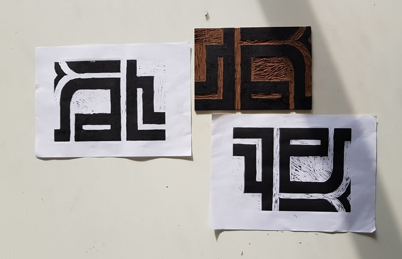

Bonjour, je m'appelle Alice, je suis étudiante en deuxième année de L'école de design Nantes Atlantique. J'ai choisi la filière interactivité, par goût de l'innovation et de la relation humaine qui tourne autour du design. Savoir analyser l'humain et ses pensées pour pouvoir lui offrir des services.
Le travail était de choisir deux lettres puis dans faire une composition et pour finir recentrer sur une zone. La linogravure permet alors d'avoir un rendu très graphique, elle met en valeur le travail fait main.
We're out est une application qui permet de sortir avec le moins d'affaire possible, pour ne pas être trop chargé mais à la fois pour ne pas perdre ses affaire. On y rentre de l'argent qui permet de payer des verres et permettra à la fois de compter son taux d'alcoolémie en fonctions de votre âge/sexe/poids. Il est possible de rechercher aussi des bar/boîtes/tabac etc... Un bracelet connecté permet alors de ne pas avoir son téléphone sur soit. Sortez en toute sérénité !
Avec seulement du polysterène il a fallut réaliser une sculture en rapport avec la ruine. J'ai donc realisé un trésor abandonné où la nature a reprit le dessus.
Avec seulement du polysterène il a fallut réaliser une sculture en rapport avec la ruine. J'ai donc realisé un trésor abandonné où la nature a reprit le dessus.
Ce projet consistait à réaliser une expérience interactive numérique, la contrainte était d'utiliser une carte picoboard qui contenait des capteurs de son, de slide et de pression. Nous avons alors réalisé une installation interactive numérique qui consistait à pouvoir gérer de la pluie. Un bouton pour de l'orage, un slider pour augmenter la pluie, une molette pour arrêter la pluie et pour finir souffler se qui créer de la pluie et fait du vent.
Etudes actuelles :
Nantes atlantique design Nantes 44000
Expériences professionnelles :
Stages en agence d’architecture
Richez associés (2013)
Urbanica (2014)
Autres stages
Prép’art (2017)
Brassart (2017)
Adresse : Nantes 44000